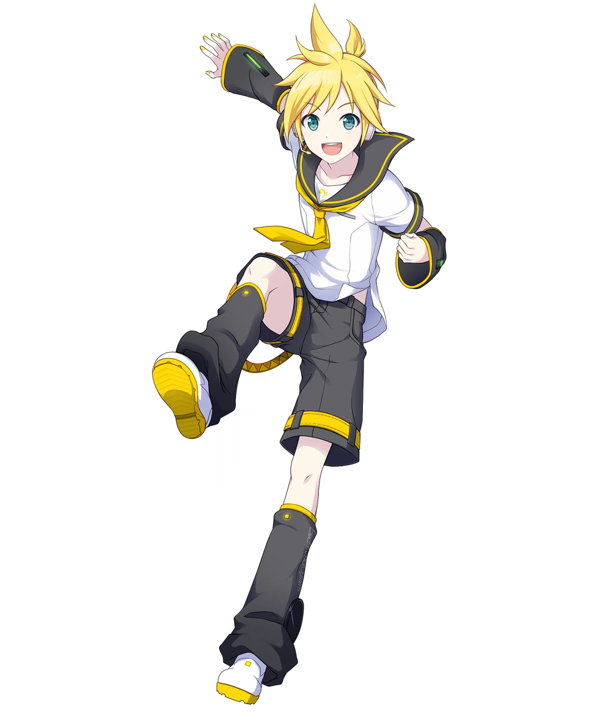
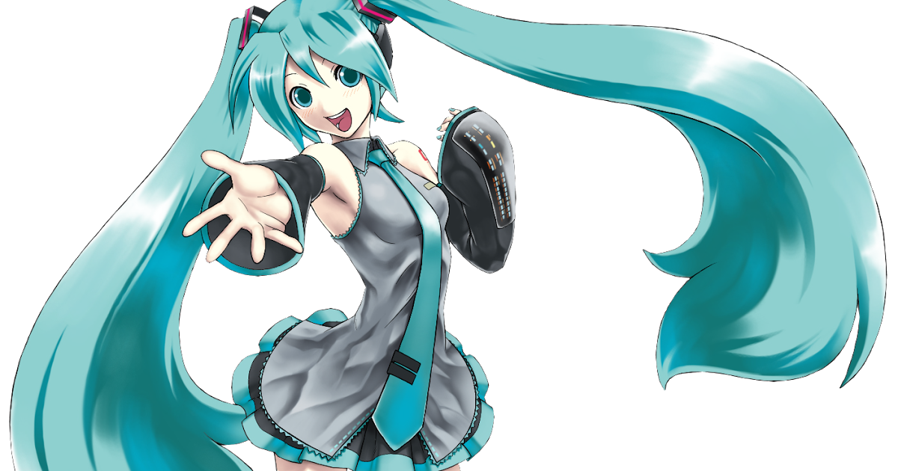
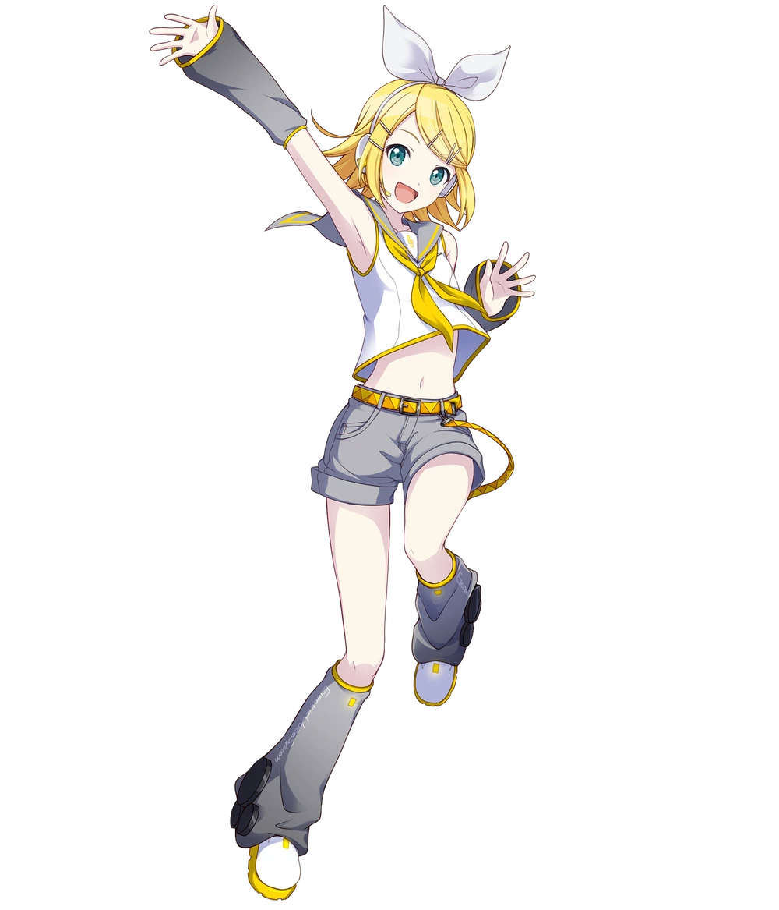
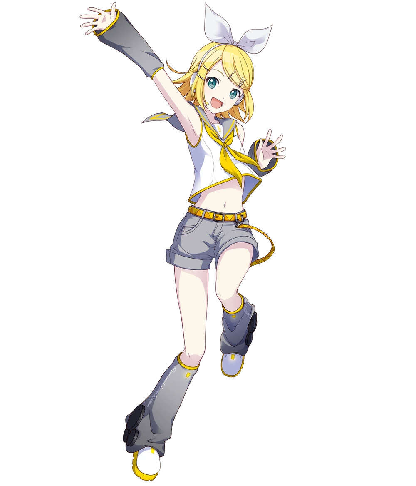
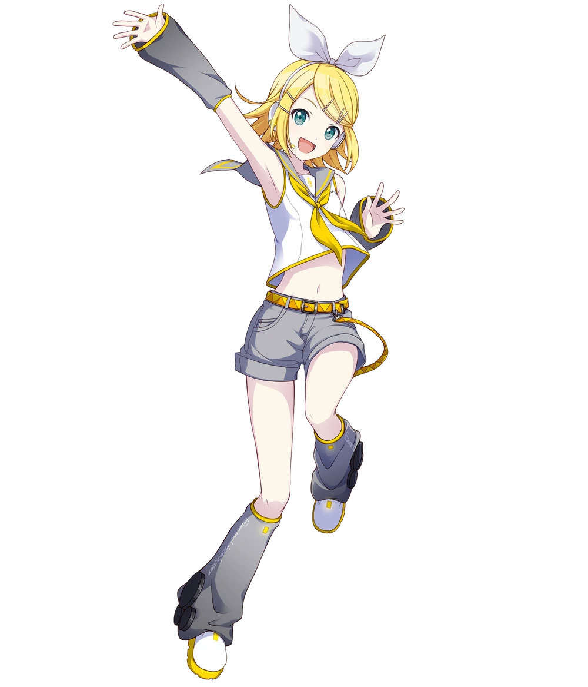
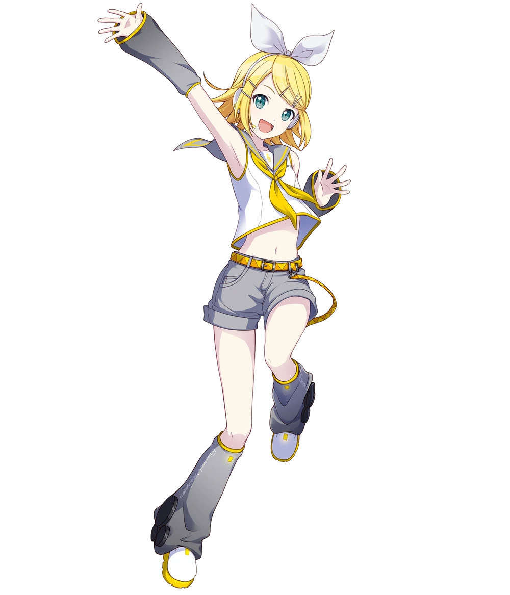

 



Vocaloid is a singing synthesizer software that allows users to create music featuring voices that sound like human singers. Developed by Yamaha Corporation, it has gained immense popularity worldwide, especially among music producers and fans of Japanese pop culture. By using a combination of text-to-speech technology and a vast library of vocal samples, Vocaloid enables users to create original songs with a wide range of vocal styles and tones. From energetic pop anthems to soothing ballads, the possibilities are virtually endless. Vocaloid has also spawned a thriving community of fans and creators who share their music, collaborate on projects, and even develop their own Vocaloid characters. This vibrant ecosystem has contributed to the software's enduring popularity and cultural impact.

Wide Range of Genres: Vocaloid songs cover a diverse array of musical genres, from pop and rock to electronic dance music and classical. Original and Fan-Made: Many Vocaloid songs are created by professional musicians, while others are produced by dedicated fans. Language: While most Vocaloid songs are sung in Japanese, there are also songs in other languages, including English, Chinese, and Korean. Cultural Impact: Vocaloid has had a significant impact on popular culture, influencing fashion, anime, and video games. Commercial Success: Some Vocaloid songs have achieved commercial success, charting on music charts and appearing in television and film.

A VOCALOID "vocalist", "character", or "mascot" (unofficial terminology)[1] refers heavily to an illustrated character of a VOCALOID™-powered voice bank, although a product name or miscellaneous representation (like an avatar) can be included.

In order for a product to be classified as a "VOCALOID", there should be acknowledgment by the YAMAHA Corporation under their licensing terms and there is a VOCALOID™-powered vocal in development or fully released. This includes characters from games with vocals powered by the VOCALOID™ software, as well as privatized vocals. It can be noted that fanmade Derivatives and other synthesizer characters such as UTAU are not classified as "VOCALOIDs".
Vocaloid clips and videos are a popular form of digital media that feature Vocaloid characters singing songs or performing dances. These clips are often created by fans using Vocaloid software and can range from simple karaoke-style videos to highly polished animations.
Music Videos: The most common type of Vocaloid clip, featuring a Vocaloid character singing a song with accompanying visuals. Dance Covers: Videos that showcase Vocaloid characters performing choreographed dances to popular songs. Original Songs: Clips featuring Vocaloid characters singing original songs composed by fans. Mashups: Videos that combine elements from different songs or artists. Animations: Highly polished videos that use advanced animation techniques to create visually stunning scenes. Impact of Vocaloid Clips and Videos: Popular Culture: Vocaloid characters and their associated clips and videos have become a significant part of popular culture, particularly in Japan and other parts of Asia. Creative Expression: Vocaloid clips and videos provide a platform for fans to express their creativity and share their love of music and animation. Commercial Success: Some Vocaloid characters and their associated content have achieved commercial success, leading to merchandise, concerts, and other opportunities. Vocaloid clips and videos offer a unique and engaging form of digital entertainment that continues to grow in popularity.
All rights reserved to: